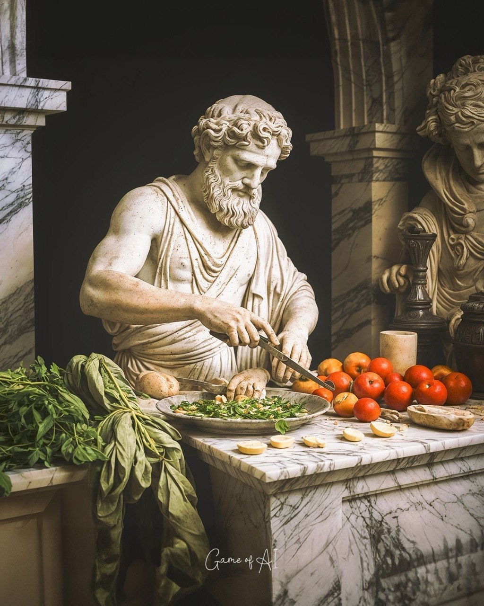

Белок
Основа восстановления и роста мышц. Без него тренировки остаются только усталостью.
Materia
Без еды тело не строится. Рацион в курсе не про жесткие запреты, а про контроль, белок, энергию и стабильность.

Основа восстановления и роста мышц. Без него тренировки остаются только усталостью.
Овощи, вода, нормальный режим и меньше хаотичных перекусов.
Без фанатизма: питание должно помогать жить, тренироваться и держать форму.
Continuum